Ordinary linear regression can be used to fit a straight line, or any function that is linear in its parameters, to data with normally distributed errors. This is the most commonly used regression model, however, it is not always a realistic one. Generalized linear models extend the linear model in two ways. First, assumption of linearity in the parameters is relaxed, by introducing the link function. Second, error distributions other than the normal can be modeled.
This demo illustrates the use of the Statistics Toolbox and the GLMFIT and GLMVAL functions for fitting and evaluating generalized linear models.
A regression model defines the distribution of a response variable (often generically denoted as y) in terms of one or more predictor variables (often denoted x1, x2, etc.). The most commonly used regression model, the ordinary linear regression, models y as a normal random variable, whose mean is linear function of the predictors, b0 + b1*x1 + ... , and whose variance is constant. In the simplest case of a single predictor x, the model can be represented as a straight line with Gaussian distributions about each point.
mu = @(x) -1.9+.23*x; x = 5:.1:15; yhat = mu(x); dy = -3.5:.1:3.5; sz = size(dy); k = (length(dy)+1)/2; x1 = repmat(7,sz); y1 = mu(x1)+dy; z1 = normpdf(y1,mu(x1),1); x2 = repmat(10,sz); y2 = mu(x2)+dy; z2 = normpdf(y2,mu(x2),1); x3 = repmat(13,sz); y3 = mu(x3)+dy; z3 = normpdf(y3,mu(x3),1); plot3(x,yhat,zeros(size(x)),'b-', ... x1,y1,z1,'r-', x1([k k]),y1([k k]),[0 z1(k)],'r:', ... x2,y2,z2,'r-', x2([k k]),y2([k k]),[0 z2(k)],'r:', ... x3,y3,z3,'r-', x3([k k]),y3([k k]),[0 z3(k)],'r:'); zlim([0 1]); xlabel('X'); ylabel('Y'); zlabel('Probability density'); grid on; view([-45 45]);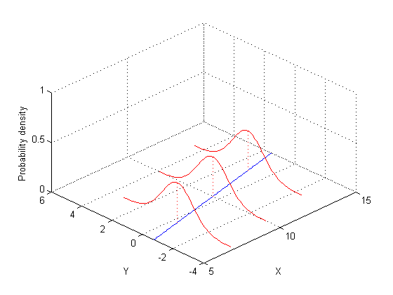
In a generalized linear model, the mean of the response is modeled as a monotonic nonlinear transformation of a linear function of the predictors, g(b0 + b1*x1 + ...) . The inverse of the transformation g is known as the "link" function. Examples include the logit (sigmoid) link and the log link. Also, y may have a non-normal distribution, such as the binomial or Poisson. For example, a Poisson regression with log link and a single predictor x can be represented as an exponential curve with Poisson distributions about each point.
mu = @(x) exp(-1.9+.23*x); x = 5:.1:15; yhat = mu(x); x1 = repmat(7,1,5); y1 = 0:4; z1 = poisspdf(y1,mu(x1)); x2 = repmat(10,1,7); y2 = 0:6; z2 = poisspdf(y2,mu(x2)); x3 = repmat(13,1,9); y3 = 0:8; z3 = poisspdf(y3,mu(x3)); plot3(x,yhat,zeros(size(x)),'b-', ... [x1; x1],[y1; y1],[z1; zeros(size(y1))],'r-', x1,y1,z1,'r.', ... [x2; x2],[y2; y2],[z2; zeros(size(y2))],'r-', x2,y2,z2,'r.', ... [x3; x3],[y3; y3],[z3; zeros(size(y3))],'r-', x3,y3,z3,'r.'); zlim([0 1]); xlabel('X'); ylabel('Y'); zlabel('Probability'); grid on; view([-45 45]);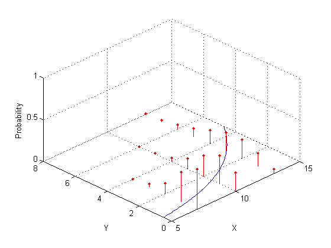
This example involves an experiment to help model the proportion of cars of various weights that fail a mileage test. The data include observations of weight, number of cars tested, and number failed.
% A set of car weights weight = [2100 2300 2500 2700 2900 3100 3300 3500 3700 3900 4100 4300]'; % The number of cars tested at each weight tested = [48 42 31 34 31 21 23 23 21 16 17 21]'; % The number of cars failing the test at each weight failed = [1 2 0 3 8 8 14 17 19 15 17 21]'; % The proportion of cars failing for each weight proportion = failed ./ tested; plot(weight,proportion,'s') xlabel('Weight'); ylabel('Proportion');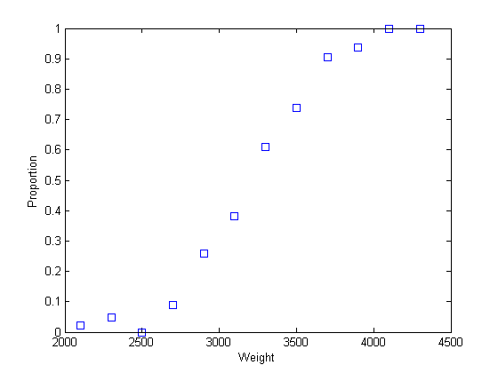
This graph is a plot of the proportion of cars failing, as a function of weight. It's reasonable to assume that the failure counts came from a binomial distribution, with a probability parameter P that increases with weight. But how exactly should P depend on weight?
We can try fitting a straight line to these data.
linearCoef = polyfit(weight,proportion,1); linearFit = polyval(linearCoef,weight); plot(weight,proportion,'s', weight,linearFit,'r-', [2000 4500],[0 0],'k:', [2000 4500],[1 1],'k:') xlabel('Weight'); ylabel('Proportion');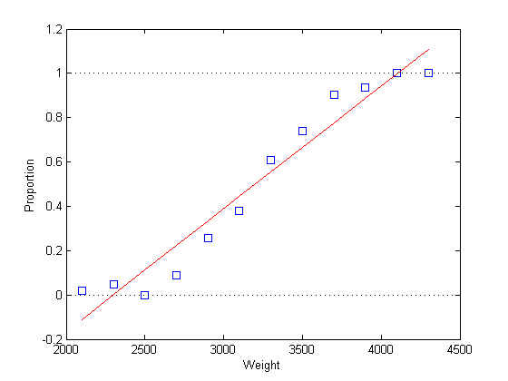
There are two problems with this linear fit:
1) The line predicts proportions less than 0 and greater than 1.
2) The proportions are not normally distributed, since they are necessarily bounded. This violates one of the assumptions required for fitting a simple linear regression model.
Using a higher-order polynomial may appear to help.
[cubicCoef,stats,ctr] = polyfit(weight,proportion,3); cubicFit = polyval(cubicCoef,weight,[],ctr); plot(weight,proportion,'s', weight,cubicFit,'r-', [2000 4500],[0 0],'k:', [2000 4500],[1 1],'k:') xlabel('Weight'); ylabel('Proportion');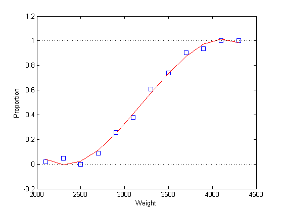
However, this fit still has similar problems. The graph shows that the fitted proportion starts to decrease as weight goes above 4000; in fact it will become negative for larger weight values. And of course, the assumption of a normal distribution is still violated.
Instead, a better approach is to use GLMFIT to fit a logistic regression model. Logistic regression is a special case of a generalized linear model, and is more appropriate than a linear regression for these data, for two reasons. First, it uses a fitting method that is appropriate for the binomial distribution. Second, the logistic link limits the predicted proportions to the range [0,1].
For logistic regression, we specify the predictor matrix, and a matrix with one column containing the failure counts, and one column containing the number tested. We also specify the binomial distribution and the logit link.
[logitCoef,dev] = glmfit(weight,[failed tested],'binomial','logit'); logitFit = glmval(logitCoef,weight,'logit'); plot(weight,proportion,'bs', weight,logitFit,'r-'); xlabel('Weight'); ylabel('Proportion');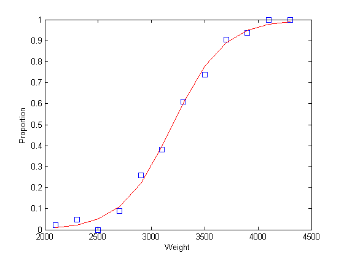
As this plot indicates, the fitted proportions asymptote to zero and one as weight becomes small or large.
The GLMFIT function provides a number of outputs for examining the fit and testing the model. For example, we can compare the deviance values for two models to determine if a squared term would improve the fit significantly.
[logitCoef2,dev2] = glmfit([weight weight.^2],[failed tested],'binomial','logit'); pval = 1 - chi2cdf(dev-dev2,1)
pval =
0.4019
The large p-value indicates that, for these data, a quadratic term does not improve the fit significantly. A plot of the two fits shows there is little difference in the fits.
logitFit2 = glmval(logitCoef2,[weight weight.^2],'logit'); plot(weight,proportion,'bs', weight,logitFit,'r-', weight,logitFit2,'g-'); legend('Data','Linear Terms','Linear and Quadratic Terms','Location','northwest');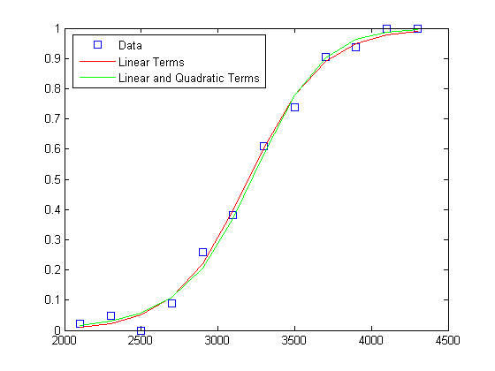
To check the goodness of fit, we can also look at a probability plot of the Pearson residuals. These are normalized so that when the model is a reasonable fit to the data, they have roughly a standard normal distribution. (Without this standardization, the residuals would have different variances.)
[logitCoef,dev,stats] = glmfit(weight,[failed tested],'binomial','logit'); normplot(stats.residp);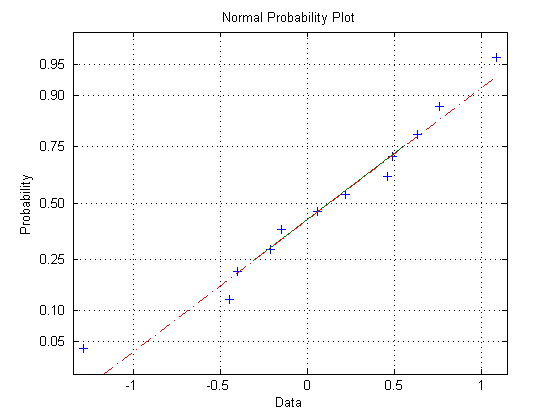
The residual plot shows a nice agreement with the normal distribution.
Once we are satisfied with the model, we can use it to make predictions, including computing confidence bounds. Here we predict the expected number of cars, out of 100 tested, that would fail the mileage test at each of four weights.
weightPred = 2500:500:4000; [failedPred,dlo,dhi] = glmval(logitCoef,weightPred,'logit',stats,.95,100); errorbar(weightPred,failedPred,dlo,dhi,':');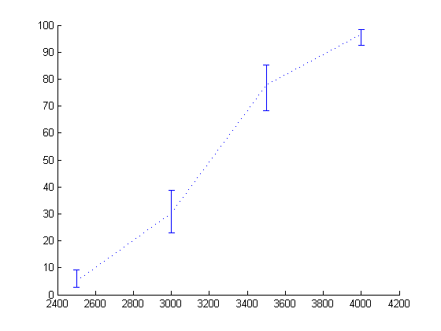
For each of the five distributions that GLMFIT supports, there is a canonical (default) link function. For the binomial distribution, the canonical link is the logit. However, there are also three other links that are sensible for binomial models. All four maintain the mean response in the interval [0, 1].
eta = -5:.1:5; plot(eta,1 ./ (1 + exp(-eta)),'-', eta,normcdf(eta), '-', ... eta,1 - exp(-exp(eta)),'-', eta,exp(-exp(eta)),'-'); xlabel('Linear function of predictors'); ylabel('Predicted mean response'); legend('logit','probit','complementary log-log','log-log','location','east');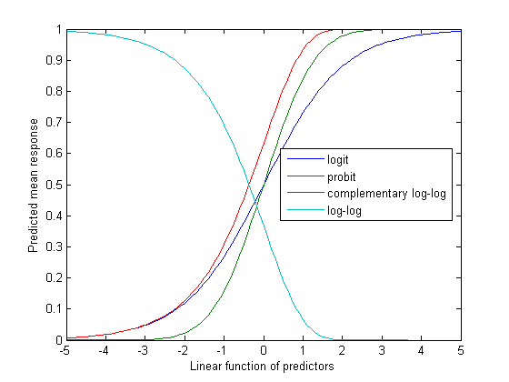
For example, we can compare a fit with the probit link to one with the logit link.
probitCoef = glmfit(weight,[failed tested],'binomial','probit'); probitFit = glmval(probitCoef,weight,'probit'); plot(weight,proportion,'bs', weight,logitFit,'r-', weight,probitFit,'g-'); legend('Data','Logit model','Probit model','Location','northwest');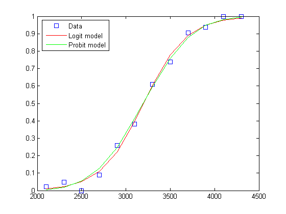
It's often difficult for the data to distinguish between these four link functions, and a choice is often made on theoretical grounds.